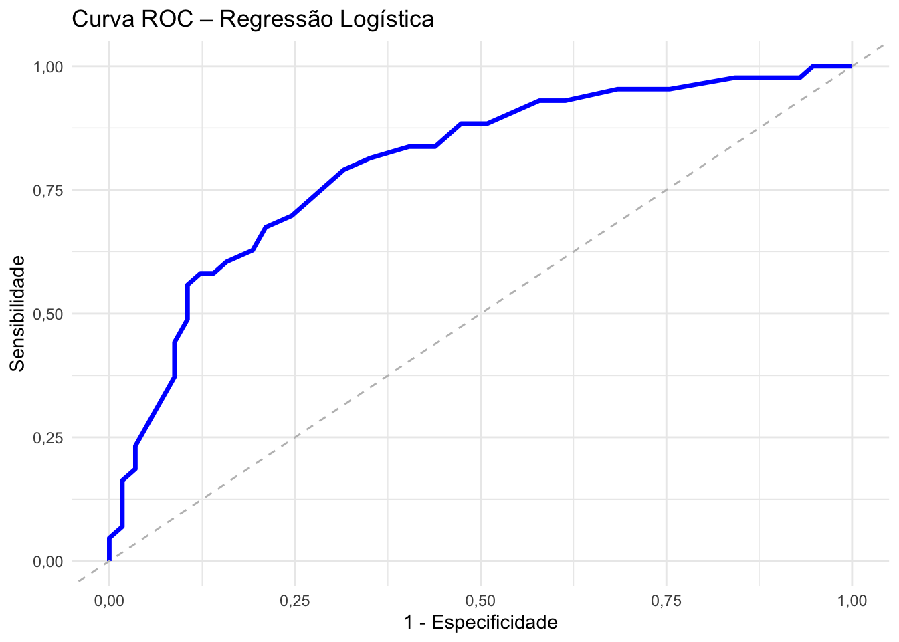

Os métodos de regressão desempenham um papel essencial na análise de dados quando se busca compreender a relação entre uma variável resposta e uma ou mais variáveis explicativas. Em diversas situações, a variável resposta é dicotômica, assumindo apenas dois possíveis valores (ex: doente, não doente). Nesses casos, a regressão logística é amplamente empregada, permitindo modelar a probabilidade de ocorrência de um evento de interesse com base em um conjunto de variáveis preditoras.
12.1 Regressão Logística Simples
Considere o exemplo de Hosmer, D.W.; Lemeshow, S. (2000): O interesse do pesquisador é explorar a relação entre idade e a presença ou ausência de doença coronária (CD). O banco de dados lista a idade em anos e a presença ou ausência de doença coronária para 100 indivíduos selecionados para participar do estudo.
Call:
glm(formula = CD ~ Idade, family = "binomial", data = dados)
Coefficients:
Estimate Std. Error z value Pr(>|z|)
(Intercept) -5,30945 1,13365 -4,683 0,00000282 ***
Idade 0,11092 0,02406 4,610 0,00000402 ***
---
Signif. codes: 0 '***' 0,001 '**' 0,01 '*' 0,05 '.' 0,1 ' ' 1
(Dispersion parameter for binomial family taken to be 1)
Null deviance: 136,66 on 99 degrees of freedom
Residual deviance: 107,35 on 98 degrees of freedom
AIC: 111,35
Number of Fisher Scoring iterations: 4
Função de ligação estimada do modelo: -5,31 + 0,11 \(\times\) Idade.
A razão de chances da variável Idade foi de 1,12. Ou seja, quando a idade aumenta em um ano, as chances de ocorrência de doença coronária aumentam em 1,12 vezes. Ou ainda, para cada aumento de um ano na idade, aumentam-se 12% as chances de ocorrência de doença coronária.
Um pseudo R² de Nagelkerke igual a 0,34 indica que 34% da variabilidade na chance de ocorrência do evento é explicada pelo modelo.
No geral, o modelo apresentou valores consistentes nas diferentes medidas de pseudo R², com destaque para o R² de Nagelkerke (0,34) e o R² de McFadden (0,21), indicando que a variável explicativa utilizada contribui de forma significativa para a explicação da probabilidade do desfecho.
Obs: R² de Nagelkerke > 0,30 e R² de McFadden > 0,20 já são considerados boa explicação.
12.1.4 Teste de Hosmer-Lemeshow (qualidade do ajuste)
Hosmer and Lemeshow goodness of fit (GOF) test
data: dados$CD, fitted(modelo)
X-squared = 2,2243, df = 8, p-value = 0,9734
12.1.5 Curva ROC e AUC
Code
library(pROC)# Obter probabilidades previstasprob<-predict(modelo, type ="response")#: retorna a probabilidade estimada de Y = 1 para cada observação# Criar objeto da curva ROCroc_obj<-roc(dados$CD, prob)# Converter para data.frameroc_df<-data.frame( especificidade =rev(roc_obj$specificities), sensibilidade =rev(roc_obj$sensitivities))# usamos rev() para inverter e alinhar corretamente os pares (1 - especificidade, sensibilidade) na direção crescente.# Criar o gráfico com ggplotroc_df%>%ggplot(aes(x =1-especificidade, y =sensibilidade))+geom_line(color ="blue", size =1.2)+geom_abline(linetype ="dashed", color ="gray")+labs( title ="Curva ROC – Regressão Logística", x ="1 - Especificidade", y ="Sensibilidade")+theme_minimal()

AUC
AUC mede o “poder discriminativo global” do modelo. Quanto mais próximo de 1, melhor o modelo é em separar positivos de negativos.
95% CI(Intervalo de Confiança de 95% para Acurácia): (0,6427; 0,8226).
No Information Rate (NIR)- Taxa de Acerto Aleatório: 0,57, a precisão que poderia ser obtida prevendo sempre a classe majoritária (classe 0 neste caso).
P-Value [Acc > NIR]:\(<0,001\) p-valor do teste estatístico que compara a acurácia do modelo com a NIR. \(p-valor < 0,05\) indica que a acurácia do modelo é significativamente melhor que a NIR.
Kappa: 0,4666 - Índice de concordância. O kappa varia de -1 a 1, com 0 indicando não melhor que o acaso e 1 indicando concordância perfeita entre as previsões e os valores verdadeiros.
Mcnemar's Test P-Value: 0,844, p-valor para o teste que compara o número de falsos positivos e falsos negativos. \(p-valor > 0,05\) indica que não há diferença significativa entre o número de falsos positivos e negativos.
Sensitivity(Sensibilidade): proporção de casos positivos reais que foram identificados corretamente pelo modelo.
Confusion Matrix and Statistics
Reference
Prediction 0 1
0 39 9
1 18 34
Accuracy : 0,73
95% CI : (0,632, 0,8139)
No Information Rate : 0,57
P-Value [Acc > NIR] : 0,0006861
Kappa : 0,463
Mcnemar's Test P-Value : 0,1236577
Sensitivity : 0,7907
Specificity : 0,6842
Pos Pred Value : 0,6538
Neg Pred Value : 0,8125
Prevalence : 0,4300
Detection Rate : 0,3400
Detection Prevalence : 0,5200
Balanced Accuracy : 0,7375
'Positive' Class : 1
12.2 Regressão Logística Múltipla
A regressão logística múltipla é uma técnica estatística utilizada para modelar a probabilidade de ocorrência de um evento binário (como sucesso ou falha, presença ou ausência de uma condição) a partir de duas ou mais variáveis independentes. Diferente da regressão linear, que estima valores contínuos, a regressão logística estima a chance de um determinado resultado ocorrer, utilizando a função logística para restringir os valores previstos entre 0 e 1. Essa abordagem é amplamente empregada em pesquisas na área da Saúde para identificar fatores associados a desfechos clínicos e estimar seus efeitos ajustados.
Para exemplificar o ajuste do modelo de regressão logística multipla, considere a base de dados PimaIndiansDiabetes2 do pacote mlbench . Essa base de dados contém contém informações de saúde coletadas em um estudo com mulheres da etnia Pima, grupo indígena dos Estados Unidos, com o objetivo de identificar fatores associados ao diabetes tipo 2. Versão corrigida da base PimaIndiansDiabetes do repositório UCI. Variáveis disponíveis:
pregnant: Número de vezes que a mulher esteve grávida
glucose: Glicose plasmática em teste de 2h de tolerância à glicose (mg/dL)
pressure: Pressão arterial diastólica (mmHg)
triceps: Espessura da dobra cutânea do tríceps (mm)
insulin: Nível sérico de insulina (μU/mL)
mass: Índice de Massa Corporal (IMC)
pedigree: Histórico familiar de diabetes (score genético)
age: Idade da paciente (anos)
diabetes: Desfecho binário: pos (diabética) ou neg (não diabética)
Warning: package 'gtsummary' was built under R version 4.3.3
Attaching package: 'gtsummary'
The following object is masked from 'package:MASS':
select
Code
dados_diabetes%>%dplyr::select(-diabetes)%>%tbl_summary(by =resposta, label =c(pregnant~"Número de gestações",glucose~"Concentração de glicose no plasma",pressure~"Pressão arterial diastólica",triceps~"Espessura da dobra cutânea do tríceps",insulin~"Insulina sérica em 2 horas",mass~"Índice de massa corporal",pedigree~"Função de histórico familiar de diabetes",age~"Idade",age_cat~"Faixa etária"), statistic =list(all_continuous()~"{mean} ({sd})"), digits =everything()~1)%>%bold_labels()%>%modify_header(label~"**Variável**")
Variável
0 N = 2621
1 N = 1301
Número de gestações
2,7 (2,6)
4,5 (3,9)
Concentração de glicose no plasma
111,4 (24,6)
145,2 (29,8)
Pressão arterial diastólica
69,0 (11,9)
74,1 (13,0)
Espessura da dobra cutânea do tríceps
27,3 (10,4)
33,0 (9,6)
Insulina sérica em 2 horas
130,9 (102,6)
206,8 (132,7)
Índice de massa corporal
31,8 (6,8)
35,8 (6,7)
Função de histórico familiar de diabetes
0,5 (0,3)
0,6 (0,4)
Idade
28,3 (9,0)
35,9 (10,6)
Faixa etária
20-29
190,0 (72,5%)
48,0 (36,9%)
30-39
43,0 (16,4%)
35,0 (26,9%)
40-49
20,0 (7,6%)
26,0 (20,0%)
>=50
9,0 (3,4%)
21,0 (16,2%)
1 Mean (SD); n (%)
12.2.2 Ajuste do modelo de regressão logística múltipla
Modelo completo
Code
modelo_completo<-glm(resposta~pregnant+glucose+pressure+triceps+insulin+age_cat+mass+pedigree, data =dados_diabetes , family =binomial)
Interpretação: Para cada aumento de 1 mg/dL na glicose, as chances (OR) de ter diabetes tipo 2 aumentam em 3,8%. Mulheres da etnia Pima de 30 a 39 anos têm 2,16 vezes mais chance de ter diabetes tipo 2 em comparação com o grupo de referência (20–29 anos). Já as mulheres de 40 a 49 anos têm 5 vezes mais chance de ter diabetes tipo 2 que as de 20–29 anos. Além disso, as mulheres com 50 anos ou mais têm 3,57 vezes mais chance de ter diabetes do tipo 2 do que o grupo de 20–29 anos. Cada aumento de 1 ponto no IMC está associado a um aumento de 7,5% na chance de desenvolver diabetes tipo 2. E, para cada ponto adicional no índice de histórico familiar (score genético), o risco de diabetes é 3 vezes maior.
Um pseudo R² de Nagelkerke igual a 0,46 indica que 46% da variabilidade na chance de ocorrência do evento (diabetes tipo 2) é explicada pelo modelo.
No geral, o modelo apresentou valores consistentes nas diferentes medidas de pseudo R², com destaque para o R² de Nagelkerke (0,46) e o R² de McFadden (0,31), indicando que as variáveis explicativas utilizadas contribuem de forma significativa para a explicação da probabilidade do desfecho (diabetes tipo 2).
12.2.5 Teste de Hosmer-Lemeshow (qualidade do ajuste)
Hosmer and Lemeshow goodness of fit (GOF) test
data: dados_diabetes$resposta, fitted(modelo_stepwise)
X-squared = 3,7632, df = 8, p-value = 0,8778
12.2.6 Curva ROC e AUC
Code
library(pROC)# Obter probabilidades previstasprob_mc<-predict(modelo_stepwise, type ="response")#: retorna a probabilidade estimada de Y = 1 para cada observação# Criar objeto da curva ROCroc_obj<-roc(dados_diabetes$resposta, prob_mc)
Setting levels: control = 0, case = 1
Setting direction: controls < cases
Code
# Converter para data.frameroc_df<-data.frame( especificidade =rev(roc_obj$specificities), sensibilidade =rev(roc_obj$sensitivities))# usamos rev() para inverter e alinhar corretamente os pares (1 - especificidade, sensibilidade) na direção crescente.# Criar o gráfico com ggplotroc_df%>%ggplot(aes(x =1-especificidade, y =sensibilidade))+geom_line(color ="blue", size =1.2)+geom_abline(linetype ="dashed", color ="gray")+labs( title ="Curva ROC – Regressão Logística", x ="1 - Especificidade", y ="Sensibilidade")+theme_minimal()
Confusion Matrix and Statistics
Reference
Prediction 0 1
0 222 36
1 40 94
Accuracy : 0,8061
95% CI : (0,7635, 0,8441)
No Information Rate : 0,6684
P-Value [Acc > NIR] : 0,0000000009719
Kappa : 0,566
Mcnemar's Test P-Value : 0,7308
Sensitivity : 0,7231
Specificity : 0,8473
Pos Pred Value : 0,7015
Neg Pred Value : 0,8605
Prevalence : 0,3316
Detection Rate : 0,2398
Detection Prevalence : 0,3418
Balanced Accuracy : 0,7852
'Positive' Class : 1
12.2.8 Teste de Kolmogorov–Smirnov (KS)
O teste de Kolmogorov–Smirnov (KS) é usado em regressão logística para avaliar o poder discriminativo do modelo, ou seja, o quanto ele distingue bem entre as classes 0 (sem diabetes tipo 2) e 1 (com diabetes tipo 2) com base nas probabilidades previstas.
Code
# Obter probabilidades previstasprob_mc<-predict(modelo_stepwise, type ="response")# Separar as probabilidades por grupo verdadeiroprobs_1<-prob_mc[dados_diabetes$resposta==1]probs_0<-prob_mc[dados_diabetes$resposta==0]# Realizar o teste de KSks_result<-ks.test(probs_1, probs_0)print(ks_result)
Asymptotic two-sample Kolmogorov-Smirnov test
data: probs_1 and probs_0
D = 0,58567, p-value < 0,00000000000000022
alternative hypothesis: two-sided
D statistic: valor máximo da diferença entre as curvas acumuladas das probabilidades dos grupos 0 e 1.
Quanto maior o D, melhor a separação entre os grupos.
Um D > 0.3 geralmente indica bom poder discriminativo.
p-value: testa a hipótese nula de que as duas distribuições são iguais.
Um p < 0.05 sugere que o modelo consegue separar bem as classes.
12.3 Referências
Hosmer, D.W.; Lemeshow, S. (2000). Applied Logistic Regression. John Wiley & Sons, Inc. New York, 2ed.
Mendonça, T. S. (2008). Modelos de regressão logística clássica, Bayesiana e redes neurais para Credit Scoring. Disponível em: https://repositorio.ufscar.br/handle/20.500.14289/4535.
# Regressão logística no R```{r, echo=FALSE}options(scipen = 999) # para evitar números em notação científicaoptions(OutDec = ",") # definir separador decimal```Os métodos de regressão desempenham um papel essencial na análise de dados quando se busca compreender a relação entre uma variável resposta e uma ou mais variáveis explicativas. Em diversas situações, a variável resposta é dicotômica, assumindo apenas dois possíveis valores (ex: doente, não doente). Nesses casos, a regressão logística é amplamente empregada, permitindo modelar a probabilidade de ocorrência de um evento de interesse com base em um conjunto de variáveis preditoras.## Regressão Logística Simples**Considere o exemplo de Hosmer, D.W.; Lemeshow, S. (2000):** O interesse do pesquisador é explorar a relação entre idade e a presença ou ausência de doença coronária (CD). O banco de dados lista a idade em anos e a presença ou ausência de doença coronária para 100 indivíduos selecionados para participar do estudo.- **Leitura da base de dados:**```{r, message=FALSE, warning=FALSE}library(tidyverse) dados <- readxl::read_excel("./data/ex1_reglogistica.xlsx")glimpse(dados)```- **Investigando a relação entre as variáveis:**```{r, message=FALSE, warning=FALSE}plot(dados$Idade, dados$CD, pch = 16, col = "blue")```ou```{r, message=FALSE, warning=FALSE}dados %>% ggplot(aes(x = Idade, y = CD)) + geom_jitter(height = 0.05, width = 0) ```### Ajuste do modelo de regressão logística simples```{r}modelo <-glm(CD ~ Idade, data = dados, family ="binomial")```- **Resumo do modelo**```{r}summary(modelo)```**Função de ligação estimada do modelo:** `r round(modelo$coefficients[1],2)` + `r round(modelo$coefficients[2],2)` $\times$ Idade.### Odds Ratio e IC 95%```{r}#ORexp(coef(modelo)) ```ou```{r, message=FALSE, warning=FALSE}library(mfx)#ORlogitor(CD ~ Idade, data=dados) ```A razão de chances da variável Idade foi de 1,12. Ou seja, quando a idade aumenta em um ano, as chances de ocorrência de doença coronária aumentam em 1,12 vezes. Ou ainda, para cada aumento de um ano na idade, aumentam-se 12% as chances de ocorrência de doença coronária.```{r, message=FALSE, warning=FALSE}#IC95% ORexp(confint(modelo))```### Pseudo R²```{r, message=FALSE, warning=FALSE}library(modEvA)RsqGLM(modelo)```Um pseudo R² de Nagelkerke igual a 0,34 indica que 34% da variabilidade na chance de ocorrência do evento é explicada pelo modelo.No geral, o modelo apresentou valores consistentes nas diferentes medidas de pseudo R², com destaque para o R² de Nagelkerke (0,34) e o R² de McFadden (0,21), indicando que a variável explicativa utilizada contribui de forma significativa para a explicação da probabilidade do desfecho.Obs: R² de Nagelkerke \> 0,30 e R² de McFadden \> 0,20 já são considerados boa explicação.### Teste de Hosmer-Lemeshow (qualidade do ajuste)```{r, message=FALSE, warning=FALSE}library(ResourceSelection) hoslem.test(dados$CD, fitted(modelo))```### Curva ROC e AUC```{r, message=FALSE, warning=FALSE}library(pROC) # Obter probabilidades previstasprob <- predict(modelo, type = "response") #: retorna a probabilidade estimada de Y = 1 para cada observação# Criar objeto da curva ROCroc_obj <- roc(dados$CD, prob)# Converter para data.frameroc_df <- data.frame( especificidade = rev(roc_obj$specificities), sensibilidade = rev(roc_obj$sensitivities) ) # usamos rev() para inverter e alinhar corretamente os pares (1 - especificidade, sensibilidade) na direção crescente.# Criar o gráfico com ggplotroc_df %>% ggplot(aes(x = 1 - especificidade, y = sensibilidade)) + geom_line(color = "blue", size = 1.2) + geom_abline(linetype = "dashed", color = "gray") + labs( title = "Curva ROC – Regressão Logística", x = "1 - Especificidade", y = "Sensibilidade" ) + theme_minimal()```- **AUC**AUC mede o "poder discriminativo global" do modelo. Quanto mais próximo de 1, melhor o modelo é em separar positivos de negativos.```{r, message=FALSE, warning=FALSE}auc(roc_obj)```- **Encontrando o melhor ponto de corte:****Índice de Youden (J):** $J = Sensibilidade + Especificidade -1$. O ponto de corte ideal é aquele que maximiza $J$.```{r, message=FALSE, warning=FALSE}melhor_corte <- coords(roc_obj, x = "best", #para melhor ponto best.method = "youden", #índice de Youden ret = "threshold") #ponto de cortemelhor_corte```- **Outras métricas do melhor ponto:**```{r, message=FALSE, warning=FALSE}coords(roc_obj, x = "best", ret = c("threshold", "sensitivity", "specificity", "accuracy") )```### Matriz de confusãoNo R, construimos a matriz de confusão através da função [`confusionMatrix`](https://www.rdocumentation.org/packages/caret/versions/7.0-1/topics/confusionMatrix) do pacote `caret`.#### Ponto de corte de 0,5```{r, message=FALSE, warning=FALSE}library(caret)predito <- ifelse(prob >= 0.5, 1, 0) confusionMatrix(factor(predito), factor(dados$CD), positive = "1")```##### **Interpretando a saída da** `confusionMatrix`:| Predito | Real: 1 | Real: 0 ||:-------:|:------------------------:|:------------------------:|| **1** | Verdadeiro Positivo (29) | Falso Positivo (12) || **0** | Falso Negativo (14) | Verdadeiro Negativo (45) |: Matriz de Confusão- `Accuray` **- Acurácia** (Proporção total de classificações corretas):$$ Acurácia = \frac{VP + VN} {VP + FP + FN + VN} $$$$ Acurácia = \frac{29+45}{29+12+14+45} = 0,74 $$- `95% CI` **(Intervalo de Confiança de 95% para Acurácia):** (0,6427; 0,8226).- `No Information Rate (NIR)` **- Taxa de Acerto Aleatório:** 0,57, a precisão que poderia ser obtida prevendo sempre a classe majoritária (classe 0 neste caso).- `P-Value [Acc > NIR]` **:** $<0,001$ p-valor do teste estatístico que compara a acurácia do modelo com a NIR. $p-valor < 0,05$ indica que a acurácia do modelo é significativamente melhor que a NIR.- `Kappa` **:** 0,4666 - **Índice de concordância**. O kappa varia de -1 a 1, com 0 indicando não melhor que o acaso e 1 indicando concordância perfeita entre as previsões e os valores verdadeiros.- `Mcnemar's Test P-Value` **:** 0,844, p-valor para o teste que compara o número de falsos positivos e falsos negativos. $p-valor > 0,05$ indica que não há diferença significativa entre o número de falsos positivos e negativos.- `Sensitivity` **(Sensibilidade):** proporção de casos positivos reais que foram identificados corretamente pelo modelo.$$ Sensibilidade = \frac{VP}{VP+FN} = \frac{29}{29+14} = 0,6744 $$- `Specificity` **(Especificidade):** proporção de casos negativos reais que foram corretamente classificados pelo modelo.$$Especificidade = \frac{VN}{FP+VN}=\frac{45}{12+45} = 0,7895$$- `Pos Pred Value` **(Valor Preditivo Positivo):** proporção de previsões positivas que realmente eram positivas.$$VPP = \frac{VP}{VP+FP} = \frac{29}{29+12}=0,7073$$- `Neg Pred Value` **(Valor Preditivo Negativo):** proporção de previsões negativas que realmente eram negativas.$$VPN = \frac{VN}{FN+VN}=\frac{45}{14+45}=0,7627$$- `Prevalence` **(Prevalência):** proporção de casos verdadeiramente positivos no banco de dados.$$Prevalência = \frac{VP+FN}{VP+FP+FN+VN} = \frac{29+14}{100} = 0,4300$$- `Detection Rate` **(Taxa de Detecção):** proporção de casos verdadeiramente positivos que foram detectados corretamente pelo modelo.$$Taxa \ de \ detecção = \frac{VP}{VP+FP+FN+VN} = \frac{29}{100} = 0,2900 $$- `Detection Prevalence` **(Detecção de Prevalência):** proporção de casos previstos como positivos pelo modelo.$$Detecção \ prevalência = \frac{VP+FP}{VP+FP+FN+VN} = \frac{29+12}{100} = 0,4100$$- `Balanced Accuracy` **(Média de sensibilidade e especificidade):**$$ \frac{Sensibilidade + Especificidade}{2} = \frac{0,6744+0,7895}{2} = 0,7319$$#### Ponto de corte Curva ROC (`r melhor_corte`)```{r, message=FALSE, warning=FALSE}predito_melhor_corte <- ifelse(prob >= as.numeric(melhor_corte), 1, 0) confusionMatrix(factor(predito_melhor_corte), factor(dados$CD), positive = "1")```## Regressão Logística MúltiplaA regressão logística múltipla é uma técnica estatística utilizada para modelar a probabilidade de ocorrência de um evento binário (como sucesso ou falha, presença ou ausência de uma condição) a partir de duas ou mais variáveis independentes. Diferente da regressão linear, que estima valores contínuos, a regressão logística estima a chance de um determinado resultado ocorrer, utilizando a função logística para restringir os valores previstos entre 0 e 1. Essa abordagem é amplamente empregada em pesquisas na área da Saúde para identificar fatores associados a desfechos clínicos e estimar seus efeitos ajustados.Para exemplificar o ajuste do modelo de regressão logística multipla, considere a base de dados `PimaIndiansDiabetes2` do pacote `mlbench` . Essa base de dados contém contém informações de saúde coletadas em um estudo com mulheres da etnia Pima, grupo indígena dos Estados Unidos, com o objetivo de **identificar fatores associados ao diabetes tipo 2**. Versão corrigida da base `PimaIndiansDiabetes` do repositório UCI. Variáveis disponíveis:- `pregnant:` Número de vezes que a mulher esteve grávida- `glucose:` Glicose plasmática em teste de 2h de tolerância à glicose (mg/dL)- `pressure:` Pressão arterial diastólica (mmHg)- `triceps:` Espessura da dobra cutânea do tríceps (mm)- `insulin:` Nível sérico de insulina (μU/mL)- `mass:` Índice de Massa Corporal (IMC)- `pedigree:` Histórico familiar de diabetes (score genético)- `age:` Idade da paciente (anos)- `diabetes:` Desfecho binário: pos (diabética) ou neg (não diabética)**Base de dados:**```{r}library(mlbench)data(PimaIndiansDiabetes2)dados_diabetes <-na.omit(PimaIndiansDiabetes2)#glimpse(dados_diabetes)# Criar faixas etáriasdados_diabetes$age_cat <-cut(dados_diabetes$age,breaks =c(20, 30, 40, 50, 82),right =FALSE, # inclui limite inferior, exclui superiorlabels =c("20-29", "30-39", "40-49", ">=50"))# Construindo variável respostadados_diabetes <- dados_diabetes %>%mutate(resposta =ifelse(diabetes =="pos", 1, 0))```### Análise descritiva```{r}library(gtsummary)dados_diabetes %>% dplyr::select(-diabetes) %>%tbl_summary(by = resposta,label =c( pregnant ~"Número de gestações", glucose ~"Concentração de glicose no plasma", pressure ~"Pressão arterial diastólica", triceps ~"Espessura da dobra cutânea do tríceps", insulin ~"Insulina sérica em 2 horas", mass ~"Índice de massa corporal", pedigree ~"Função de histórico familiar de diabetes", age ~"Idade", age_cat ~"Faixa etária" ),statistic =list(all_continuous() ~"{mean} ({sd})" ),digits =everything() ~1 ) %>%bold_labels() %>%modify_header(label ~"**Variável**") ```### Ajuste do modelo de regressão logística múltipla- **Modelo completo**```{r}modelo_completo <-glm(resposta ~ pregnant + glucose + pressure + triceps + insulin + age_cat + mass + pedigree,data = dados_diabetes ,family = binomial)```- **Resumo do modelo**```{r}summary(modelo_completo)```#### Seleção de Variáveis - Stepwise```{r}modelo_stepwise <- MASS::stepAIC(modelo_completo, direction ="both")```- **Resumo do modelo**```{r}summary(modelo_stepwise)```Todas as variáveis do modelo são estatisticamente significativas.**Função de ligação estimada do modelo:**`r round(modelo_stepwise$coefficients[1],2)` + `r round(modelo_stepwise$coefficients[2],2)` $\times$ Concentração de glicose + `r round(modelo_stepwise$coefficients[3],2)` $\times$ Faixa etária \[30 - 39\] + `r round(modelo_stepwise$coefficients[4],2)` $\times$ Faixa etária \[40 - 49\] + `r round(modelo_stepwise$coefficients[5],2)` $\times$ Faixa etária \[\>= 50\] + `r round(modelo_stepwise$coefficients[6],2)` $\times$ IMC + `r round(modelo_stepwise$coefficients[7],2)` $\times$ Score genético.### Odds Ratio e IC 95%```{r, message=FALSE, warning=FALSE}OR <- round(exp(coef(modelo_stepwise)),3) cbind(OR, round( exp(confint(modelo_stepwise)), 3) )```**Interpretação:** Para cada aumento de 1 mg/dL na glicose, as chances (OR) de ter diabetes tipo 2 aumentam em 3,8%. Mulheres da etnia Pima de 30 a 39 anos têm 2,16 vezes mais chance de ter diabetes tipo 2 em comparação com o grupo de referência (20–29 anos). Já as mulheres de 40 a 49 anos têm 5 vezes mais chance de ter diabetes tipo 2 que as de 20–29 anos. Além disso, as mulheres com 50 anos ou mais têm 3,57 vezes mais chance de ter diabetes do tipo 2 do que o grupo de 20–29 anos. Cada aumento de 1 ponto no IMC está associado a um aumento de 7,5% na chance de desenvolver diabetes tipo 2. E, para cada ponto adicional no índice de histórico familiar (score genético), o risco de diabetes é 3 vezes maior.### Pseudo R²```{r, message=FALSE, warning=FALSE}RsqGLM(modelo_stepwise)```Um pseudo R² de Nagelkerke igual a 0,46 indica que 46% da variabilidade na chance de ocorrência do evento (diabetes tipo 2) é explicada pelo modelo.No geral, o modelo apresentou valores consistentes nas diferentes medidas de pseudo R², com destaque para o R² de Nagelkerke (0,46) e o R² de McFadden (0,31), indicando que as variáveis explicativas utilizadas contribuem de forma significativa para a explicação da probabilidade do desfecho (diabetes tipo 2).### Teste de Hosmer-Lemeshow (qualidade do ajuste)```{r, message=FALSE, warning=FALSE}hoslem.test(dados_diabetes$resposta, fitted(modelo_stepwise))```### Curva ROC e AUC```{r}library(pROC) # Obter probabilidades previstasprob_mc <-predict(modelo_stepwise, type ="response") #: retorna a probabilidade estimada de Y = 1 para cada observação# Criar objeto da curva ROCroc_obj <-roc(dados_diabetes$resposta, prob_mc)# Converter para data.frameroc_df <-data.frame(especificidade =rev(roc_obj$specificities),sensibilidade =rev(roc_obj$sensitivities) ) # usamos rev() para inverter e alinhar corretamente os pares (1 - especificidade, sensibilidade) na direção crescente.# Criar o gráfico com ggplotroc_df %>%ggplot(aes(x =1- especificidade, y = sensibilidade)) +geom_line(color ="blue", size =1.2) +geom_abline(linetype ="dashed", color ="gray") +labs(title ="Curva ROC – Regressão Logística",x ="1 - Especificidade",y ="Sensibilidade" ) +theme_minimal()#AUCauc(roc_obj)```### Matriz de Confusão```{r}predito_mc <-ifelse(prob_mc >=as.numeric(melhor_corte), 1, 0) #predito_mc <- ifelse(prob_mc >= 0.5, 1, 0) confusionMatrix(factor(predito_mc), factor(dados_diabetes$resposta), positive ="1")```### Teste de Kolmogorov–Smirnov (KS)O teste de Kolmogorov–Smirnov (KS) é usado em regressão logística para avaliar o poder discriminativo do modelo, ou seja, o quanto ele distingue bem entre as classes 0 (sem diabetes tipo 2) e 1 (com diabetes tipo 2) com base nas probabilidades previstas.```{r}# Obter probabilidades previstasprob_mc <-predict(modelo_stepwise, type ="response") # Separar as probabilidades por grupo verdadeiroprobs_1 <- prob_mc[dados_diabetes$resposta ==1]probs_0 <- prob_mc[dados_diabetes$resposta ==0]# Realizar o teste de KSks_result <-ks.test(probs_1, probs_0)print(ks_result)```**D statistic**: valor máximo da diferença entre as curvas acumuladas das probabilidades dos grupos 0 e 1.- Quanto **maior o D**, melhor a separação entre os grupos.- Um **D \> 0.3** geralmente indica bom poder discriminativo.**p-value**: testa a hipótese nula de que as duas distribuições são iguais.- Um **p \< 0.05** sugere que o modelo consegue separar bem as classes.## Referências- Hosmer, D.W.; Lemeshow, S. (2000). Applied Logistic Regression. John Wiley & Sons, Inc. New York, 2ed.- Mendonça, T. S. (2008). Modelos de regressão logística clássica, Bayesiana e redes neurais para Credit Scoring. Disponível em: https://repositorio.ufscar.br/handle/20.500.14289/4535.- <https://www.rdocumentation.org/packages/caret/versions/7.0-1/topics/confusionMatrix>- <https://smolski.github.io/livroavancado/reglog.html>- <https://changjunlee.com/blogs/posts/4_confusion_mat_and_roc>